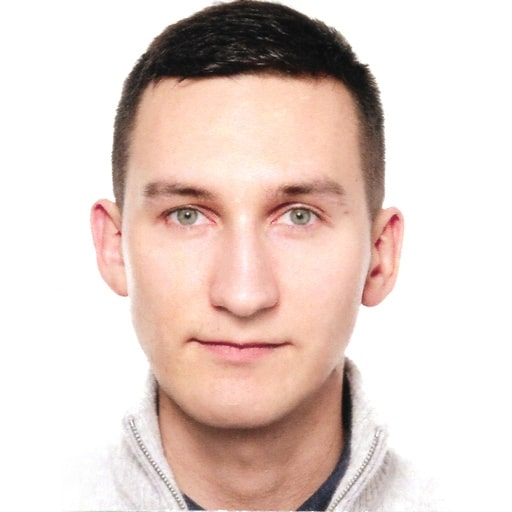

I am a full-stack developer and software architect, strongly focused on high-efficient web applications. I am successfully combining my knowledge from different specialities. Also, I love good codebase, so I am always trying to highly improve developer experience by automating work - it's much faster and makes people happy, as they may focus on more exciting stuff.
I've been working with many technologies, methodologies and techniques, both on front-end and back-end side. I've got big experience with server-rendered front-end applications as well. I was responsible for building and advising on all stages and layers of IT systems, including both front-end and back-end architecture. I've got also 8+ years of experience on (mostly technical) leading positions.
I am a fast-learner. I am trying to understand how technologies work on low-level, so learning a new one is much simpler. There is a lot of similarities, which make everything simpler to learn, when you are able to find patterns.